Perspective Geometry in Real Photographs
Exercise 1: Close vs. Far: Why Distance Fixes Portrait Distortion
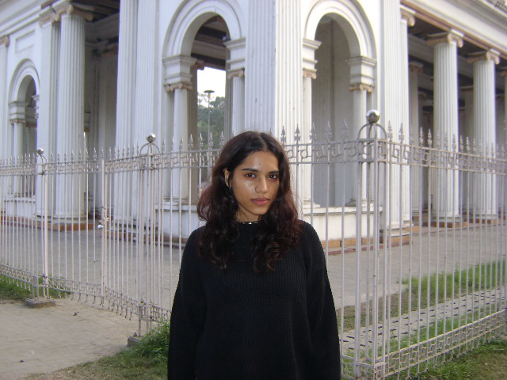
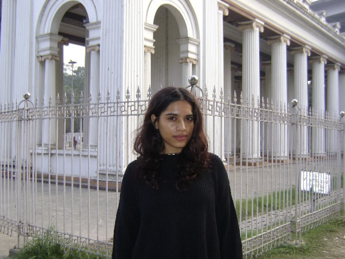

What I Observed
- The subject's face appears slightly more prominent in the center
- The nose and mid-face project forward relative to the sides of the face
- The fence behind the subject spreads rapidly as it approaches the camera
- The vertical columns in the background converge strongly toward a vanishing point
- The nearest fence posts appear much thicker and more widely spaced than those farther away
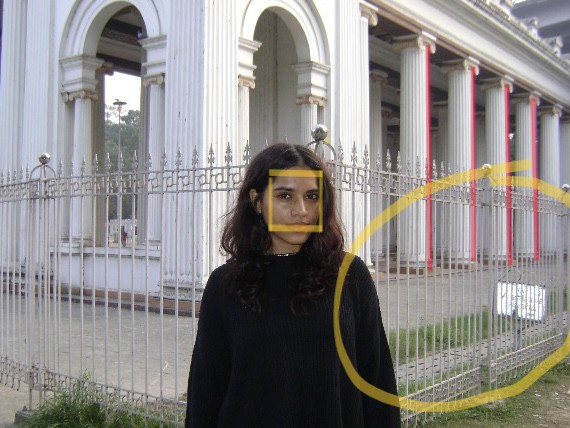
What I Observed
- Facial proportions appear calmer and more natural
- The nose no longer dominates relative to the cheeks
- The spacing between fence bars looks more uniform, they line up more densely.
- The background columns appear more parallel
- The entire scene feels slightly "flattened," with weaker depth cues
For the first experiment, we photographed the same person in front of a colonnaded building and metal fence using two different camera configurations on a SONY DSC-S750. The goal was to isolate the effect of camera distance on facial proportions while keeping the subject approximately the same size in the final image.In the first image, the camera was positioned relatively close to the subject. In the second image, we stepped back about 3-4 feet and zoomed in to re-establish similar framing. Although both photographs contain the same person in the same location, they differ noticeably in how three-dimensional structure is rendered. This difference arises not from optical lens distortion, but from the geometry of perspective projection itself. The critical factor is that the camera is now much farther away from the subject.
Why the close photo looks distorted:
When we stand close to the subject, the nose is physically closer to the camera than the ears. Even a few centimeters of depth difference becomes large relative to the total distance. This means the nose has a smaller Z than the ears. Since perspective projection uses the formula:
Dividing by a smaller Z makes the nose project to a larger size on the image plane. At the same time, background structures like the fence and columns recede sharply in depth. Their Z values grow quickly, so their projected size shrinks rapidly. This causes dramatic line convergence, strong vanishing points, and exaggerated depth. This is why the image feels more three-dimensional and slightly distorted.
Why the far/zoomed photo looks natural:
In the second image, we physically moved farther away from the subject. Now the nose and ears are both far from the camera. Their absolute depths are large, and the difference between their depths becomes tiny compared to the overall distance. Mathematically, if the nose is at depth Z and the ears are at depth Z + δ, and Z is very large, then 1/Z ≈ 1/(Z + δ). So they project to nearly the same scale. Zooming only increases the focal length f to restore framing, it doesn't change the geometry of the scene. The ratios X/Z and Y/Z remain almost constant across the face. As a result, facial proportions stabilize and appear natural.
Exercise 2: Urban Scene: Telephoto Compression
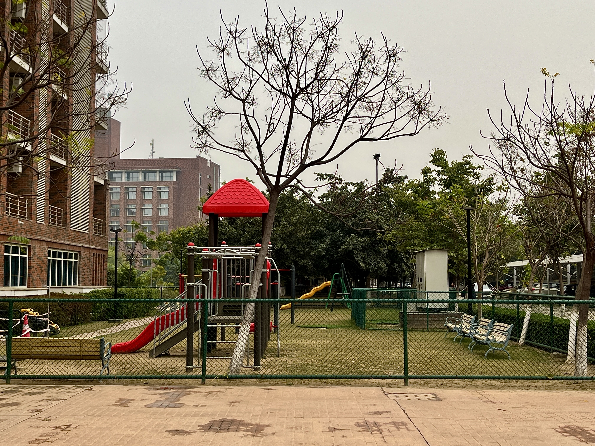
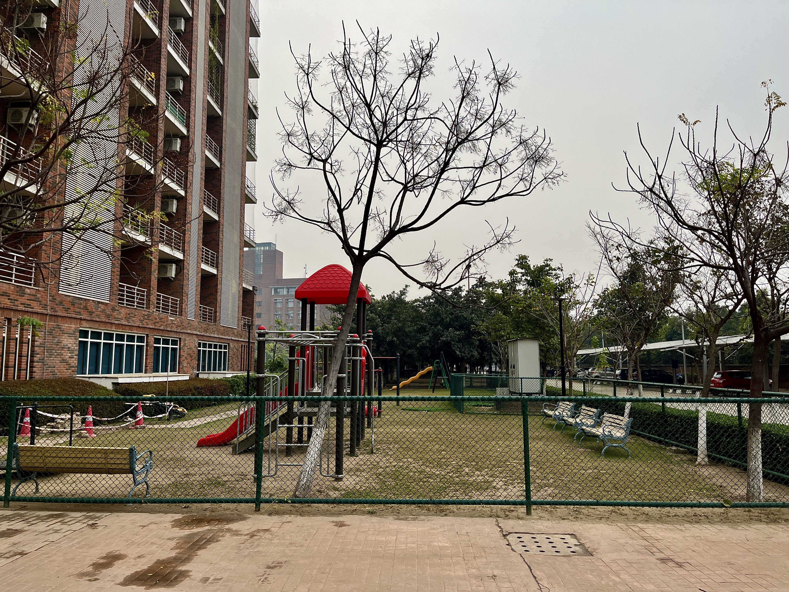
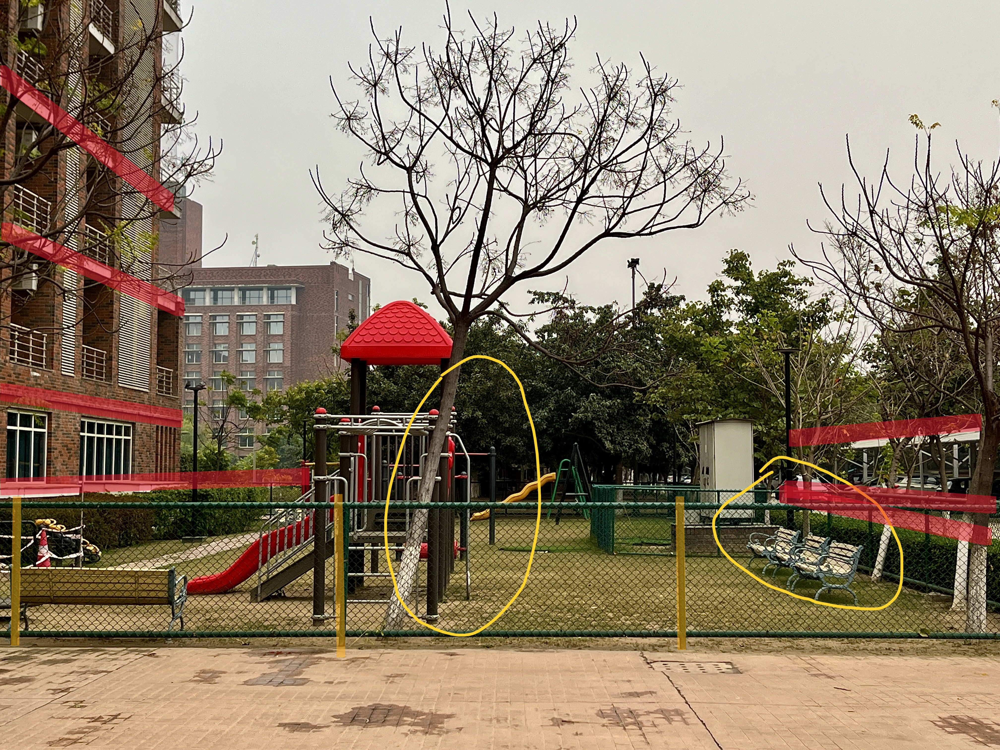
For the second experiment, we photographed a playground courtyard framed by apartment buildings, fences, benches, trees, and walkways using two different camera configurations. This scene was chosen because it contains many straight, parallel structures at different depths, such as fence rails, building edges, pavement seams, rows of benches, and tree trunks. These elements make the underlying projection geometry visually measurable.
What I Observed:
- The fence spans the foreground with nearly uniform spacing between its vertical bars
- The benches on the right appear stacked close together, with little visible separation in depth
- The central tree feels visually close to the playground equipment behind it
- The background building does not appear dramatically smaller than foreground structures
- Walkways and fence rails converge only weakly
- The entire scene feels flattened or compressed
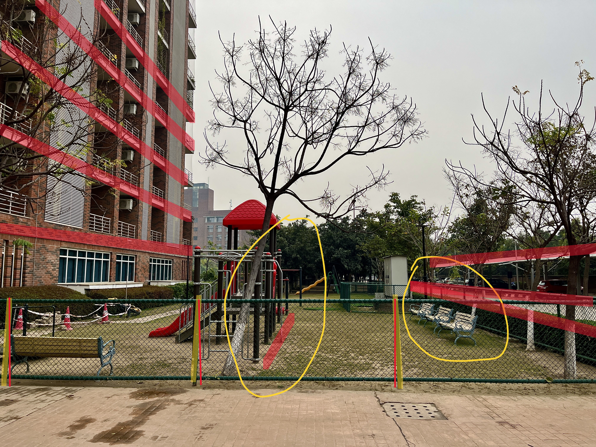
What I Observed:
- The nearest fence posts appear thicker and farther apart than those farther away
- The benches recede rapidly into the distance
- The playground slide becomes much larger relative to the background trees and buildings
- Pavement seams angle sharply inward
- The building edges on the left converge strongly toward a vanishing point
- The overall scene feels much more three-dimensional
Why the Far / Zoomed Photo Looks Flattened:
When I stood far from the playground, all major elements in the scene, the fence, benches, trees, slide, and buildings, were at relatively large depths Z from the camera. Although these objects are not at the same distance in absolute terms, the relative differences between their depths become small compared to the overall camera-to-scene distance. Foreground objects therefore do not expand dramatically relative to background objects. Parallel lines, such as fence rails or pavement edges, subtend only small angles at the camera and consequently appear almost parallel in the image. This means that the vanishing points associated with these directions move very far away, sometimes effectively outside the image frame. The camera is sampling only a narrow cone of rays, making the projection resemble the orthographic limit of a perspective camera. This geometric effect is what photographers refer to as “telephoto compression.”
Why the Closer / Wide Photo Shows Strong Depth :
In the second image, I physically moved closer to the foreground fence and walkway. This caused the nearest objects to have much smaller depth values Z than the trees and buildings in the background. This creates, steeply converging lines, clearly visible vanishing points, rapid changes in object scale, and a strong sense of front-to-back separation.
Exercise 3: Perspective vs. Orthographic-Like Projection
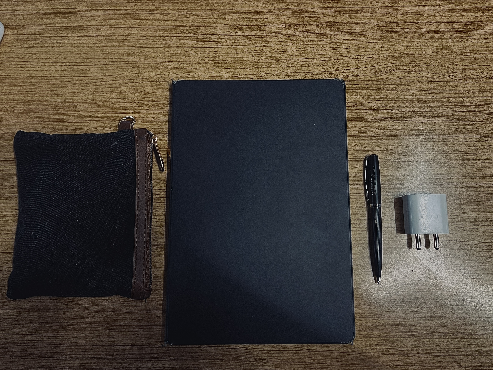
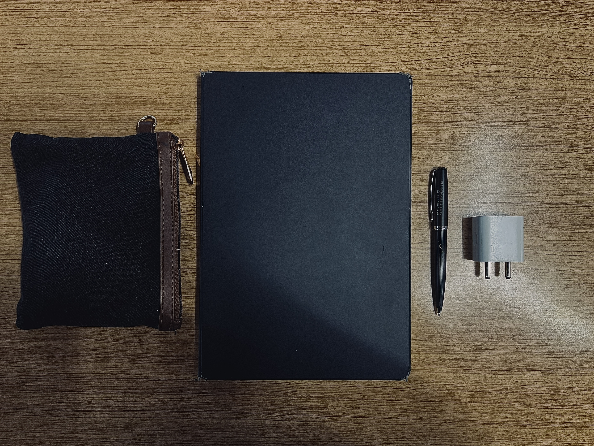
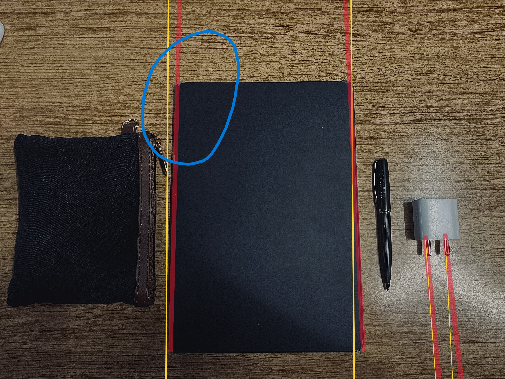
For the third experiment, we photographed (almost at an angle perpendicular to the tabletop) a simple tabletop arrangement consisting of a wallet, a notebook, a pen, and a charger placed on a flat wooden surface. This scene was selected because it contains many straight edges and approximately planar geometry, making it ideal for distinguishing between perspective and orthographic-like projections. In the first image, the camera was positioned closer to the table surface and slightly off-axis. In the second image, the camera was moved farther away and oriented more directly above the scene, with the framing adjusted so that the objects occupied approximately the same region of the image.
What I Observed:
- The notebook’s left and right edges are not perfectly parallel in the image
- The charger plug prongs are not perfectly symmetric in size
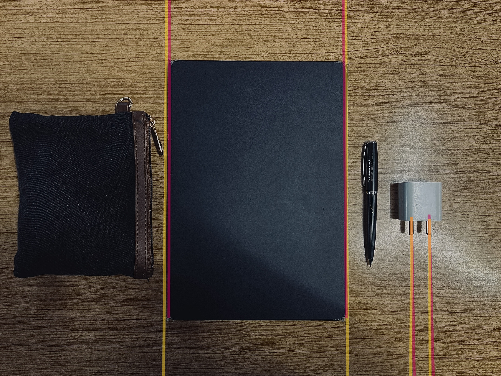
What I Observed:
- The notebook edges appear more parallel
- The wallet, pen, and charger align more cleanly with the notebook
- The charger prongs appear closer in size
- The entire arrangement looks flatter and more diagram-like
Although both photographs show the same objects arranged in the same configuration, they differ subtly in the way parallel edges appear and in how depth across the scene is rendered. As in the earlier exercises, these differences arise from projection geometry rather than from optical distortion. For the second image, strictly speaking, the camera is still performing perspective projection. However, by increasing camera distance and adjusting framing, the configuration approaches the orthographic limit in which rays are approximately parallel and depth variation has negligible visual impact.